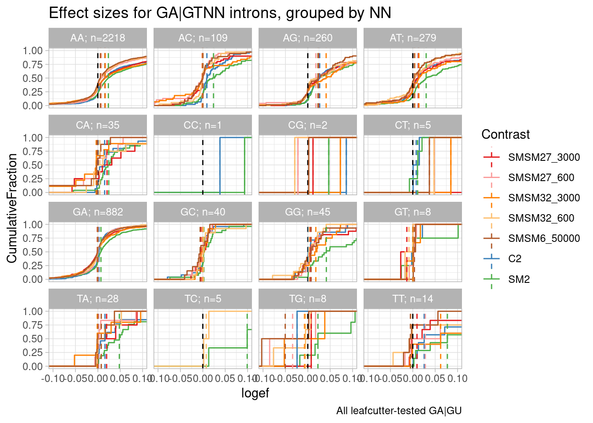
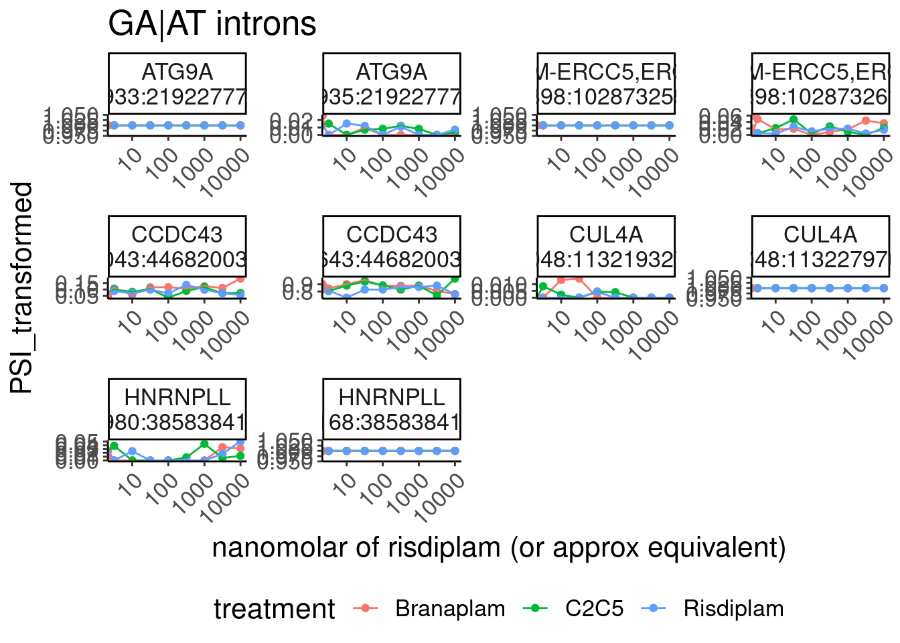
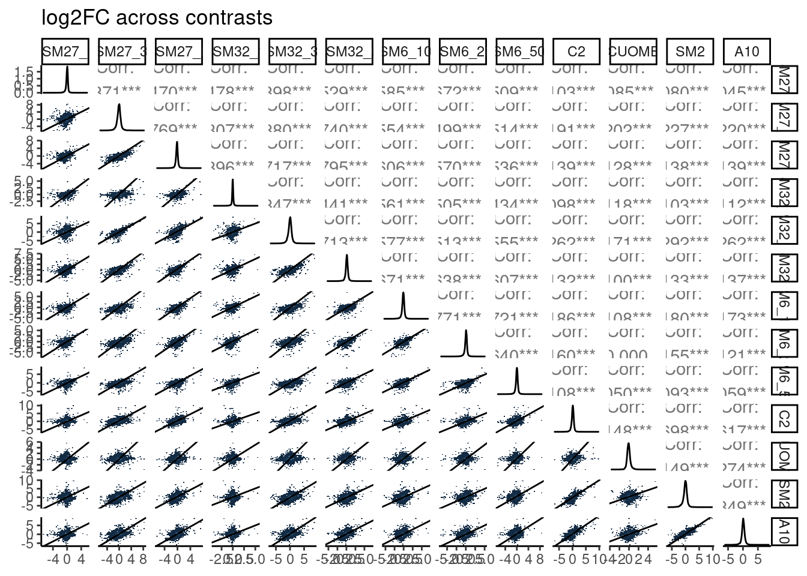

2023-11-02_3MoleculesOfInterestLeafcutterDs
2023-11-02
Last updated: 2023-12-05
Checks: 5 2
Knit directory:
20211209_JingxinRNAseq/analysis/
This reproducible R Markdown analysis was created with workflowr (version 1.7.0). The Checks tab describes the reproducibility checks that were applied when the results were created. The Past versions tab lists the development history.
The R Markdown file has unstaged changes. To know which version of
the R Markdown file created these results, you’ll want to first commit
it to the Git repo. If you’re still working on the analysis, you can
ignore this warning. When you’re finished, you can run
wflow_publish to commit the R Markdown file and build the
HTML.
Great job! The global environment was empty. Objects defined in the global environment can affect the analysis in your R Markdown file in unknown ways. For reproduciblity it’s best to always run the code in an empty environment.
The command set.seed(19900924) was run prior to running
the code in the R Markdown file. Setting a seed ensures that any results
that rely on randomness, e.g. subsampling or permutations, are
reproducible.
Great job! Recording the operating system, R version, and package versions is critical for reproducibility.
Nice! There were no cached chunks for this analysis, so you can be confident that you successfully produced the results during this run.
Using absolute paths to the files within your workflowr project makes it difficult for you and others to run your code on a different machine. Change the absolute path(s) below to the suggested relative path(s) to make your code more reproducible.
| absolute | relative |
|---|---|
| /project2/yangili1/bjf79/20211209_JingxinRNAseq/code/bigwigs/unstranded/ | ../code/bigwigs/unstranded |
| /project2/yangili1/bjf79/20211209_JingxinRNAseq/code/SplicingAnalysis/leafcutter_all_samples_202310/leafcutter_perind_numers.bed.gz | ../code/SplicingAnalysis/leafcutter_all_samples_202310/leafcutter_perind_numers.bed.gz |
| /project2/yangili1/bjf79/20211209_JingxinRNAseq/code/ | ../code |
Great! You are using Git for version control. Tracking code development and connecting the code version to the results is critical for reproducibility.
The results in this page were generated with repository version e3d0faa. See the Past versions tab to see a history of the changes made to the R Markdown and HTML files.
Note that you need to be careful to ensure that all relevant files for
the analysis have been committed to Git prior to generating the results
(you can use wflow_publish or
wflow_git_commit). workflowr only checks the R Markdown
file, but you know if there are other scripts or data files that it
depends on. Below is the status of the Git repository when the results
were generated:
Ignored files:
Ignored: .DS_Store
Ignored: .Rhistory
Ignored: .Rproj.user/
Ignored: analysis/.RData
Ignored: analysis/.Rhistory
Ignored: analysis/20220707_TitrationSeries_DE_testing.nb.html
Ignored: code/.DS_Store
Ignored: code/._DOCK7.pdf
Ignored: code/._DOCK7_DMSO1.pdf
Ignored: code/._DOCK7_SM2_1.pdf
Ignored: code/._FKTN_DMSO_1.pdf
Ignored: code/._FKTN_SM2_1.pdf
Ignored: code/._MAPT.pdf
Ignored: code/._PKD1_DMSO_1.pdf
Ignored: code/._PKD1_SM2_1.pdf
Ignored: code/.snakemake/
Ignored: code/1KG_HighCoverageCalls.samplelist.txt
Ignored: code/5ssSeqs.tab
Ignored: code/Alignments/
Ignored: code/Branaplam_Risdiplam_specific_introns.bed.gz
Ignored: code/Branaplam_Risdiplam_specific_introns.bed.gz.tbi
Ignored: code/ChemCLIP/
Ignored: code/ClinVar/
Ignored: code/DE_testing/
Ignored: code/DE_tests.mat.counts.gz
Ignored: code/DE_tests.txt.gz
Ignored: code/DataNotToCommit/
Ignored: code/DonorMotifSearches/
Ignored: code/DoseResponseData/
Ignored: code/Exp202310_tracks.xml
Ignored: code/Exp202310_tracks_e.xml
Ignored: code/Exp202310_tracks_overlaid.xml
Ignored: code/Fastq/
Ignored: code/FastqFastp/
Ignored: code/FivePrimeSpliceSites.txt
Ignored: code/FragLenths/
Ignored: code/Ishigami/
Ignored: code/Meme/
Ignored: code/Multiqc/
Ignored: code/OMIM/
Ignored: code/OldBigWigs/
Ignored: code/PhyloP/
Ignored: code/QC/
Ignored: code/ReferenceGenomes/
Ignored: code/Rplots.pdf
Ignored: code/Session.vim
Ignored: code/Session2.vim
Ignored: code/SplicingAnalysis/
Ignored: code/TracksSession
Ignored: code/bigwigs/
Ignored: code/featureCounts/
Ignored: code/figs/
Ignored: code/fimo_out/
Ignored: code/geena/
Ignored: code/hg38ToMm39.over.chain.gz
Ignored: code/igv_session.template.xml
Ignored: code/igv_session.xml
Ignored: code/log
Ignored: code/logs/
Ignored: code/rstudio-server.job
Ignored: code/scratch/
Ignored: code/temp/
Ignored: code/test.txt.gz
Ignored: code/testPlottingWithMyScript.ForJingxin.sh
Ignored: code/testPlottingWithMyScript.ForJingxin2.sh
Ignored: code/testPlottingWithMyScript.ForJingxin3.sh
Ignored: code/testPlottingWithMyScript.ForJingxin4.sh
Ignored: code/testPlottingWithMyScript.sh
Ignored: code/tracks.with_chRNA.RisdiBrana.xml
Ignored: code/tracks.with_chRNA.RisdiBranaWithExtras.xml
Ignored: code/tracks.xml
Ignored: data/~$52CompoundsTempPlateLayoutForPipettingConvenience.xlsx
Untracked files:
Untracked: analysis/2023-11-14_MakeFimoSearchMotifs.Rmd
Untracked: data/DonorMotifs/
Unstaged changes:
Modified: analysis/2023-11-02_3MoleculesOfInterestLeafcutterDs.Rmd
Modified: code/rules/BptMotifSeach.smk
Modified: code/scripts/GenometracksByGenotype
Note that any generated files, e.g. HTML, png, CSS, etc., are not included in this status report because it is ok for generated content to have uncommitted changes.
These are the previous versions of the repository in which changes were
made to the R Markdown
(analysis/2023-11-02_3MoleculesOfInterestLeafcutterDs.Rmd)
and HTML
(docs/2023-11-02_3MoleculesOfInterestLeafcutterDs.html)
files. If you’ve configured a remote Git repository (see
?wflow_git_remote), click on the hyperlinks in the table
below to view the files as they were in that past version.
| File | Version | Author | Date | Message |
|---|---|---|---|---|
| Rmd | e3d0faa | Benjmain Fair | 2023-11-08 | add nb |
| html | e3d0faa | Benjmain Fair | 2023-11-08 | add nb |
| Rmd | 5dce412 | Benjmain Fair | 2023-11-02 | updated nb |
| html | 5dce412 | Benjmain Fair | 2023-11-02 | updated nb |
Intro
I’ve processed each of three doses for each of three molecules as a leafcutter contrast with 5 DMSO samples… Previously in the firboblast experiment, I noticed a correlation between effect size and different types of NN in NNGA|GT introns… I will similarly look for that here with these three new molecules.
Analysis
load libs
library(tidyverse)
library(RColorBrewer)
library(data.table)
library(gplots)
library(ggrepel)
library(GGally)
library(edgeR)
# define some useful funcs
sample_n_of <- function(data, size, ...) {
dots <- quos(...)
group_ids <- data %>%
group_by(!!! dots) %>%
group_indices()
sampled_groups <- sample(unique(group_ids), size)
data %>%
filter(group_ids %in% sampled_groups)
}
# Set theme
theme_set(
theme_classic() +
theme(text=element_text(size=16, family="Helvetica")))
# I use layer a lot, to rotate long x-axis labels
Rotate_x_labels <- theme(axis.text.x = element_text(angle = 45, vjust = 1, hjust=1))Read in data
juncs <- fread("../code/SplicingAnalysis/FullSpliceSiteAnnotations/JuncfilesMerged.annotated.basic.bed.gz") %>%
mutate(Junc = paste(chrom, start, end, strand, sep="_"))
donors <- fread("../code/SplicingAnalysis/FullSpliceSiteAnnotations/JuncfilesMerged.annotated.basic.bed.5ss.tab.gz", col.names = c("Junc.Donor", "seq", "DonorScore")) %>%
separate(Junc.Donor, into=c("Junc", "Donor"), sep="::")
Cluster_sig <-
Sys.glob("../code/SplicingAnalysis/Exp202310_3Molecules_Contrasts/*_cluster_significance.txt") %>%
setNames(str_replace(., "../code/SplicingAnalysis/Exp202310_3Molecules_Contrasts/(.+?)_cluster_significance.txt", "\\1")) %>%
append(
Sys.glob("../code/SplicingAnalysis/leafcutter/differential_splicing/*_cluster_significance.txt") %>%
grep("ExpOf52", ., invert=T, value=T) %>%
setNames(str_replace(., "../code/SplicingAnalysis/leafcutter/differential_splicing/(.+?)_cluster_significance.txt", "\\1"))
) %>%
lapply(fread) %>%
bind_rows(.id="Contrast")
effect_sizes <- Sys.glob("../code/SplicingAnalysis/Exp202310_3Molecules_Contrasts/*_effect_sizes.txt") %>%
setNames(str_replace(., "../code/SplicingAnalysis/Exp202310_3Molecules_Contrasts/(.+?)_effect_sizes.txt", "\\1")) %>%
append(
Sys.glob("../code/SplicingAnalysis/leafcutter/differential_splicing/*_effect_sizes.txt") %>%
grep("ExpOf52", ., invert=T, value=T) %>%
setNames(str_replace(., "../code/SplicingAnalysis/leafcutter/differential_splicing/(.+?)_effect_sizes.txt", "\\1"))
) %>%
lapply(fread, col.names=c("intron", "logef", "DMSO", "treatment", "deltapsi")) %>%
bind_rows(.id="Contrast") %>%
mutate(Junc = str_replace(intron, "^(.+?):(.+?):(.+?):clu_.+?_([+-])$", "\\1_\\2_\\3_\\4")) %>%
mutate(cluster = str_replace(intron, "^(.+?):.+?:.+?:(clu_.+?_[+-])$", "\\1:\\2")) %>%
inner_join(
inner_join(juncs, donors)
) %>%
inner_join(Cluster_sig) %>%
mutate(CellType = if_else(str_detect(Contrast, "_"), "LCL", "Fibroblast")) %>%
mutate(logef = if_else(CellType=="Fibroblast", -1*logef, logef)) %>%
mutate(logef = if_else(CellType=="Fibroblast", -1*deltapsi, deltapsi)) %>%
mutate(NN__GU = str_extract(seq, "^\\w{2}")) %>%
mutate(NNGU = substr(seq, 3, 4)) effect_sizes %>%
filter(p.adjust < 0.01) %>%
ggplot(aes(x=logef, color=Contrast)) +
stat_ecdf() +
geom_vline(xintercept = 0, linetype="dashed") +
geom_vline(
data = . %>%
group_by(NNGU, Contrast) %>%
summarise(med=median(logef, na.rm=T)),
aes(xintercept=med, color=Contrast),
linetype='dashed'
) +
coord_cartesian(xlim=c(-0.5, 0.5)) +
ylab("CumulativeFraction") +
facet_wrap(~NNGU) +
theme_light() +
ggtitle("Effect sizes for NN|GT introns, grouped by NN") +
labs(caption="Only included introns in FDR<0.01 significant clusters")
| Version | Author | Date |
|---|---|---|
| 5dce412 | Benjmain Fair | 2023-11-02 |
effect_sizes %>%
# filter(p.adjust < 0.01) %>%
filter(NNGU=="GA") %>%
ggplot(aes(x=logef, color=Contrast)) +
stat_ecdf() +
geom_vline(xintercept = 0, linetype="dashed") +
geom_vline(
data = . %>%
group_by(NN__GU, Contrast) %>%
summarise(med=median(logef, na.rm=T)),
aes(xintercept=med, color=Contrast),
linetype='dashed'
) +
coord_cartesian(xlim=c(-0.5, 0.5)) +
ylab("CumulativeFraction") +
facet_wrap(~NN__GU) +
theme_light() +
ggtitle("Effect sizes for NNGA|GT introns, grouped by NN") +
labs(caption="All tested GA|GU")
| Version | Author | Date |
|---|---|---|
| 5dce412 | Benjmain Fair | 2023-11-02 |
Make same plot with less samples… There’s a lot of clutter…
Colors <- effect_sizes %>%
distinct(Contrast) %>%
mutate(Colors = recode(Contrast, SMSM27_3000="#3182bd", SMSM27_600="#9ecae1", SMSM27_120="#deebf7", SMSM32_120="#fee0d2", SMSM32_3000="#de2d26", SMSM32_600="#fc9272", SMSM6_10000="#a65628", SMSM6_2000="#a65628", SMSM6_50000="#a65628", A10="#7fc97f", C2="#beaed4", CUOME="#fdc086", SM2="#ffff99")) %>%
dplyr::select(Contrast, Colors) %>% deframe()
Colors.Subset <- effect_sizes %>%
distinct(Contrast) %>%
filter(Contrast %in% c("SM2", "C2", "SMSM27_3000", "SMSM27_600", "SMSM32_3000", "SMSM32_600", "SMSM6_50000")) %>%
mutate(Colors = recode(Contrast, SMSM6_50000="#b15928", SMSM27_3000="#e31a1c", SMSM27_600="#fb9a99", SMSM32_3000="#ff7f00", SMSM32_600="#fdbf6f", C2="#377eb8", SM2="#4daf4a")) %>%
dplyr::select(Contrast, Colors) %>% deframe()
effect_sizes %>%
# filter(p.adjust < 0.01) %>%
filter(Contrast %in% names(Colors.Subset)) %>%
filter(NNGU=="GA") %>%
group_by(NN__GU) %>%
mutate(Unique_Elements = n_distinct(intron)) %>% # Now summarise with unique elements per group
ungroup() %>%
mutate(FacetGroup = str_glue("{NN__GU}; n={Unique_Elements}")) %>%
ggplot(aes(x=logef, color=Contrast)) +
stat_ecdf() +
geom_vline(xintercept = 0, linetype="dashed") +
geom_vline(
data = . %>%
group_by(FacetGroup, Contrast) %>%
summarise(med=median(logef, na.rm=T)),
aes(xintercept=med, color=Contrast),
linetype='dashed'
) +
scale_color_manual(values=Colors.Subset, drop=T) +
coord_cartesian(xlim=c(-0.1, 0.1)) +
ylab("CumulativeFraction") +
facet_wrap(~FacetGroup) +
theme_light() +
ggtitle("Effect sizes for NNGA|GT introns, grouped by NN") +
labs(caption="All leafcutter-tested GA|GU")
| Version | Author | Date |
|---|---|---|
| 5dce412 | Benjmain Fair | 2023-11-02 |
So first recall a similar plot I have made in the past (in this notebook: https://bfairkun.github.io/SmallMoleculeRNASeq/20220923_ExploreSpecificityEstimates.html), where the x-axis is the spearman dose:PSI correlation coefficient, sort of a proxy for effects on different NN sub-categories of NNGA|GU introns. branaplam has stronger effects on GA, CA, and TA… but AA looks more or less the same between risdiplam/branaplam… AT maybe looks a bit risdiplam specific… This btw is the same sequence in that risdiplam-specific sequence in HSD17B4 which has two poison exons. In any case, now look at the second plot, where the x-axis is the logef (from leafcutter) for introns with these different groups… I also included some data from the fibroblast experiment: SM2 (colored green, because it is a branaplam scaffold) and C2 (colored blue because it is a risdiplam scaffold). Again just looking at SM2 and C2, the relative effects between classes are mostly consistent with the dose titration experiment with risdiplam and branaplam… Anyway, now looking at SMSM27 and SMSM32 (the red and orange), the effects look stronger than C2 for the GA and CA facets… Again, its tricky to compare, because the effective genome-wide dose isn’t exactly the same between experiments, and the cell type is different… But I figure that by looking across different facets you can sort of control for those things. So from that, I do feel in some ways these molecules do have some slight branaplam-like-character moreso than risdiplam.
Let’s also look at +3 +4 positions which Ishigami et al suggests influences these molecules…
effect_sizes %>%
mutate(GUNN = substr(seq, 7,8)) %>%
# filter(p.adjust < 0.01) %>%
filter(Contrast %in% names(Colors.Subset)) %>%
filter(NNGU=="GA") %>%
group_by(GUNN) %>%
mutate(Unique_Elements = n_distinct(intron)) %>% # Now summarise with unique elements per group
ungroup() %>%
mutate(FacetGroup = str_glue("{GUNN}; n={Unique_Elements}")) %>%
ggplot(aes(x=logef, color=Contrast)) +
stat_ecdf() +
geom_vline(xintercept = 0, linetype="dashed") +
geom_vline(
data = . %>%
group_by(FacetGroup, Contrast) %>%
summarise(med=median(logef, na.rm=T)),
aes(xintercept=med, color=Contrast),
linetype='dashed'
) +
scale_color_manual(values=Colors.Subset, drop=T) +
coord_cartesian(xlim=c(-0.1, 0.1)) +
ylab("CumulativeFraction") +
facet_wrap(~FacetGroup) +
theme_light() +
ggtitle("Effect sizes for GA|GTNN introns, grouped by NN") +
labs(caption="All leafcutter-tested GA|GU")
| Version | Author | Date |
|---|---|---|
| e3d0faa | Benjmain Fair | 2023-11-08 |
risdiplam at non GU-AG introns
this got me thinking if risdiplam bulge repair can work on the small subset of introns that may be GA|GC or GA|AU.. Check out this reference
effect_sizes %>%
filter(Contrast %in% names(Colors.Subset)) %>%
mutate(Minus2Minus1 = case_when(
str_detect(seq, "^\\w{2}GA") ~ "GA",
str_detect(seq, "^\\w{2}AG") ~ "AG",
TRUE ~ "Other"
)) %>%
mutate(Plus1Plus2 = case_when(
splice_site == "GT-AG" ~ "GU",
splice_site == "GC-AG" ~ "GC",
splice_site == "AT-AC" ~ "AU",
TRUE ~ "Other"
)) %>%
mutate(IntronGroup = paste(Minus2Minus1, Plus1Plus2)) %>%
group_by(IntronGroup) %>%
mutate(Unique_Elements = n_distinct(intron)) %>% # Now summarise with unique elements per group
ungroup() %>%
mutate(FacetGroup = str_glue("{IntronGroup}; n={Unique_Elements}")) %>%
ggplot(aes(x=logef, color=Contrast)) +
stat_ecdf() +
geom_vline(xintercept = 0, linetype="dashed") +
geom_vline(
data = . %>%
group_by(FacetGroup, Contrast) %>%
summarise(med=median(logef, na.rm=T)),
aes(xintercept=med, color=Contrast),
linetype='dashed'
) +
scale_color_manual(values=Colors.Subset, drop=T) +
coord_cartesian(xlim=c(-0.1, 0.1)) +
ylab("CumulativeFraction") +
facet_wrap(~FacetGroup) +
theme_light() +
ggtitle("Effect sizes for GA|GTNN introns, grouped by NN") +
labs(caption="All leafcutter-tested GA|GU")
| Version | Author | Date |
|---|---|---|
| e3d0faa | Benjmain Fair | 2023-11-08 |
So maybe GA|GC introns are affected, but the sample size is so low its really hard to tell.. Let’s look at all the dose response curevs for the GA|GC and GA|TT introns, to check that they are believable…
dose_response_splicing_dat <- fread("../code/DoseResponseData/LCL/TidySplicingDoseData_PSITransformedAndAllDMSORepsInEachSeries.txt.gz")
dose_response_splicing_dat %>%
filter(str_detect(seq, "^\\w{2}GAGC")) %>%
mutate(doseInApproxRisdiscale = case_when(
treatment == "Risdiplam" ~ dose.nM,
treatment == "C2C5" ~ dose.nM * 10,
treatment == "Branaplam" ~ dose.nM * sqrt(10),
treatment == "DMSO" ~ 0.316,
TRUE ~ dose.nM * sqrt(10),
)) %>%
mutate(facetGroup = str_glue("{gene_names}\n{junc}")) %>%
ggplot(aes(x=doseInApproxRisdiscale, y=PSI_transformed, color=treatment)) +
geom_point() +
geom_line() +
scale_x_continuous(trans='log10') +
facet_wrap(~facetGroup, scales="free") +
Rotate_x_labels +
labs(x="nanomolar of risdiplam (or approx equivalent)", title="GA|GC introns") +
theme(legend.position='bottom')
| Version | Author | Date |
|---|---|---|
| e3d0faa | Benjmain Fair | 2023-11-08 |
dose_response_splicing_dat %>%
filter(str_detect(seq, "^\\w{2}GATT")) %>%
mutate(doseInApproxRisdiscale = case_when(
treatment == "Risdiplam" ~ dose.nM,
treatment == "C2C5" ~ dose.nM * 10,
treatment == "Branaplam" ~ dose.nM * sqrt(10),
treatment == "DMSO" ~ 0.316,
TRUE ~ dose.nM * sqrt(10),
)) %>%
mutate(facetGroup = str_glue("{gene_names}\n{junc}")) %>%
ggplot(aes(x=doseInApproxRisdiscale, y=PSI_transformed, color=treatment)) +
geom_point() +
geom_line() +
scale_x_continuous(trans='log10') +
facet_wrap(~facetGroup, scales="free") +
Rotate_x_labels +
labs(x="nanomolar of risdiplam (or approx equivalent)", title="GA|TT introns") +
theme(legend.position='bottom')Ok, that FBXW5 (chr9:136941684:136942100:clu_18609_-) example looks good, as does the CCNBP1IP1. Let’s check those on the genome browser
… They both looks believable on genome broswer… Though the branaplam induced GA|GC and the branaplam induced GA|TT event is an annotated frame-preserving event, so it doesn’t really affect host gene expression. Nonetheless, still sort of interesting that this may work from a splicing perspective. And in the GA|TT case, the sequence is AGA|TT, which may explain why there is specificity for branaplam. So maybe those same rules about the -4A and -3A still apply for these weirder splice sites.
Let’s similarly check all the GA|AU events in dose response
dose_response_splicing_dat %>%
filter(str_detect(seq, "^\\w{2}GAAT")) %>%
mutate(doseInApproxRisdiscale = case_when(
treatment == "Risdiplam" ~ dose.nM,
treatment == "C2C5" ~ dose.nM * 10,
treatment == "Branaplam" ~ dose.nM * sqrt(10),
treatment == "DMSO" ~ 0.316,
TRUE ~ dose.nM * sqrt(10),
)) %>%
mutate(facetGroup = str_glue("{gene_names}\n{junc}")) %>%
ggplot(aes(x=doseInApproxRisdiscale, y=PSI_transformed, color=treatment)) +
geom_point() +
geom_line() +
scale_x_continuous(trans='log10') +
facet_wrap(~facetGroup, scales="free") +
Rotate_x_labels +
labs(x="nanomolar of risdiplam (or approx equivalent)", title="GA|AT introns") +
theme(legend.position='bottom')
| Version | Author | Date |
|---|---|---|
| e3d0faa | Benjmain Fair | 2023-11-08 |
none of those seem promising enough to look intro any further.
Just to summarise the prevalnce of these very non canonical splice sites, let’s make some plots..
# how common is GU vs non GU at +1 and +2
dose_response_splicing_dat %>%
distinct(junc, .keep_all = T) %>%
filter(IntronType == "Annotated") %>%
mutate(Plus1Plus2 = substr(seq, 5,6)) %>%
count(Plus1Plus2) %>%
mutate(Percent = n/sum(n)*100) %>%
knitr::kable()| Plus1Plus2 | n | Percent |
|---|---|---|
| AT | 28 | 0.0432747 |
| CT | 1 | 0.0015455 |
| GA | 5 | 0.0077276 |
| GC | 548 | 0.8469468 |
| GG | 7 | 0.0108187 |
| GT | 64108 | 99.0804136 |
| TT | 6 | 0.0092731 |
# filter for NN|GU, how common is NN?
dose_response_splicing_dat %>%
distinct(junc, .keep_all = T) %>%
filter(str_detect(seq, "^\\w{4}GT")) %>%
filter(IntronType == "Annotated") %>%
mutate(Minus2Minus1 = substr(seq, 3,4)) %>%
count(Minus2Minus1) %>%
mutate(Percent = n/sum(n)*100) %>%
knitr::kable()| Minus2Minus1 | n | Percent |
|---|---|---|
| AA | 2875 | 4.4846197 |
| AC | 635 | 0.9905160 |
| AG | 35883 | 55.9727335 |
| AT | 1353 | 2.1105010 |
| CA | 1497 | 2.3351220 |
| CC | 408 | 0.6364260 |
| CG | 3911 | 6.1006427 |
| CT | 1163 | 1.8141262 |
| GA | 935 | 1.4584763 |
| GC | 322 | 0.5022774 |
| GG | 5789 | 9.0300742 |
| GT | 600 | 0.9359206 |
| TA | 386 | 0.6021089 |
| TC | 253 | 0.3946465 |
| TG | 7496 | 11.6927685 |
| TT | 602 | 0.9390404 |
# filter for AGN|GU, how common is N?
dose_response_splicing_dat %>%
distinct(junc, .keep_all = T) %>%
filter(IntronType == "Annotated") %>%
filter(str_detect(seq, "^\\wAG\\wGT")) %>%
mutate(N.Minus1Bulge = substr(seq, 4,4)) %>%
count(N.Minus1Bulge) %>%
mutate(Percent = n/sum(n)*100) %>%
knitr::kable()| N.Minus1Bulge | n | Percent |
|---|---|---|
| A | 411 | 17.046868 |
| C | 115 | 4.769805 |
| G | 1638 | 67.938615 |
| T | 247 | 10.244712 |
Differential expression
I used edge to make contrasts for each treatment:dose vs DMSO… I will look at the results, with a particular focus on identifying any totally novel genes for now, that don’t have any apparent effect in risdiplam/branaplam…
DE.results <-
bind_rows(
fread("../code/DE_testing/ExpOf3_Results.txt.gz") %>%
mutate(CellType = "LCL") %>%
mutate(treatment = str_replace(treatment, "^group", "")),
fread("../code/DE_testing/Results.txt.gz") %>%
mutate(CellType = "Fibroblast")
)
DE.results %>%
ggplot(aes(x=logFC, y=-log10(FDR), color=FDR<0.01)) +
geom_point(alpha=0.01) +
facet_wrap(~treatment)
| Version | Author | Date |
|---|---|---|
| e3d0faa | Benjmain Fair | 2023-11-08 |
DE.results %>%
dplyr::select(treatment, logCPM, Geneid) %>%
pivot_wider(names_from="treatment", values_from="logCPM") %>%
column_to_rownames("Geneid") %>%
drop_na() %>%
cor(method='s') SMSM27_120 SMSM27_3000 SMSM27_600 SMSM32_120 SMSM32_3000 SMSM32_600
SMSM27_120 1.0000000 1.0000000 1.0000000 1.0000000 1.0000000 1.0000000
SMSM27_3000 1.0000000 1.0000000 1.0000000 1.0000000 1.0000000 1.0000000
SMSM27_600 1.0000000 1.0000000 1.0000000 1.0000000 1.0000000 1.0000000
SMSM32_120 1.0000000 1.0000000 1.0000000 1.0000000 1.0000000 1.0000000
SMSM32_3000 1.0000000 1.0000000 1.0000000 1.0000000 1.0000000 1.0000000
SMSM32_600 1.0000000 1.0000000 1.0000000 1.0000000 1.0000000 1.0000000
SMSM6_10000 1.0000000 1.0000000 1.0000000 1.0000000 1.0000000 1.0000000
SMSM6_2000 1.0000000 1.0000000 1.0000000 1.0000000 1.0000000 1.0000000
SMSM6_50000 1.0000000 1.0000000 1.0000000 1.0000000 1.0000000 1.0000000
C2 0.6718307 0.6718307 0.6718307 0.6718307 0.6718307 0.6718307
CUOME 0.6718307 0.6718307 0.6718307 0.6718307 0.6718307 0.6718307
SM2 0.6718307 0.6718307 0.6718307 0.6718307 0.6718307 0.6718307
A10 0.6718307 0.6718307 0.6718307 0.6718307 0.6718307 0.6718307
SMSM6_10000 SMSM6_2000 SMSM6_50000 C2 CUOME SM2
SMSM27_120 1.0000000 1.0000000 1.0000000 0.6718307 0.6718307 0.6718307
SMSM27_3000 1.0000000 1.0000000 1.0000000 0.6718307 0.6718307 0.6718307
SMSM27_600 1.0000000 1.0000000 1.0000000 0.6718307 0.6718307 0.6718307
SMSM32_120 1.0000000 1.0000000 1.0000000 0.6718307 0.6718307 0.6718307
SMSM32_3000 1.0000000 1.0000000 1.0000000 0.6718307 0.6718307 0.6718307
SMSM32_600 1.0000000 1.0000000 1.0000000 0.6718307 0.6718307 0.6718307
SMSM6_10000 1.0000000 1.0000000 1.0000000 0.6718307 0.6718307 0.6718307
SMSM6_2000 1.0000000 1.0000000 1.0000000 0.6718307 0.6718307 0.6718307
SMSM6_50000 1.0000000 1.0000000 1.0000000 0.6718307 0.6718307 0.6718307
C2 0.6718307 0.6718307 0.6718307 1.0000000 1.0000000 1.0000000
CUOME 0.6718307 0.6718307 0.6718307 1.0000000 1.0000000 1.0000000
SM2 0.6718307 0.6718307 0.6718307 1.0000000 1.0000000 1.0000000
A10 0.6718307 0.6718307 0.6718307 1.0000000 1.0000000 1.0000000
A10
SMSM27_120 0.6718307
SMSM27_3000 0.6718307
SMSM27_600 0.6718307
SMSM32_120 0.6718307
SMSM32_3000 0.6718307
SMSM32_600 0.6718307
SMSM6_10000 0.6718307
SMSM6_2000 0.6718307
SMSM6_50000 0.6718307
C2 1.0000000
CUOME 1.0000000
SM2 1.0000000
A10 1.0000000Ok, so it is clear that the logCPM column probably refers to the DMSO expression, or maybe the mean expession, and as it is the same value for amongst each contrast in the group of contrasts… I am anticipating looking for things that are significant and strong effect size in LCL, and further filtering out the genes for which that may be the case because there is lower expression and therefore likely less power in LCLs.
GenesHigherExpressedInLCLs <- DE.results %>%
distinct(CellType, Geneid, logCPM) %>%
pivot_wider(names_from="CellType", values_from="logCPM") %>%
filter(LCL > Fibroblast) %>%
pull(Geneid)
diag_limitrange <- function(data, mapping, ...) {
ggplot(data = data, mapping = mapping, ...) +
geom_density(...) +
# coord_cartesian(xlim = c(1, 1E7)) +
theme_bw()
}
upper_point <- function(data, mapping, ...) {
ggplot(data = data, mapping = mapping, ...) +
geom_hex(...) +
geom_abline() +
theme_bw()
}
my_fn <- function(data, mapping, method="s", use="everything", ...){
# grab data
x <- eval_data_col(data, mapping$x)
y <- eval_data_col(data, mapping$y)
# calculate correlation
corr <- cor(x, y, method=method, use=use)
# calculate colour based on correlation value
# Here I have set a correlation of minus one to blue,
# zero to white, and one to red
# Change this to suit: possibly extend to add as an argument of `my_fn`
colFn <- colorRampPalette(c("blue", "white", "red"), interpolate ='spline')
fill <- colFn(100)[findInterval(corr, seq(-1, 1, length=100))]
ggally_cor(data = data, mapping = mapping, ...) +
theme_void() +
theme(panel.background = element_rect(fill=fill) + theme_classic())
}
DE.results %>%
dplyr::select(treatment, logFC, Geneid) %>%
# filter(Geneid %in% GenesHigherExpressedInLCLs) %>%
pivot_wider(names_from="treatment", values_from="logFC") %>%
dplyr::select(-Geneid) %>%
drop_na() %>%
ggpairs(
title="log2FC across contrasts",
# upper=list(continuous = my_fn),
upper=list(continuous = wrap("cor", method = "spearman", hjust=0.7)),
lower=list(continuous = upper_point),
diag=list(continuous = diag_limitrange)) +
theme_classic()
| Version | Author | Date |
|---|---|---|
| e3d0faa | Benjmain Fair | 2023-11-08 |
DE.results %>%
dplyr::select(treatment, logFC, Geneid) %>%
# filter(Geneid %in% GenesHigherExpressedInLCLs) %>%
pivot_wider(names_from="treatment", values_from="logFC") %>%
drop_na() %>%
column_to_rownames("Geneid") %>%
cor(method='s') %>%
heatmap.2(trace='none')Let’s find some genes that are DE in SMSM27 or SMSM32, but not in SM2 or C2, and then check for their dose response curve in branaplam/risdiplam…
GenesSignificantInFibroblast <- DE.results %>%
filter(CellType == "Fibroblast") %>%
filter(FDR < 0.01 & abs(logFC) > 0.5) %>%
filter(treatment %in% c("C2", "SM2")) %>%
distinct(Geneid) %>% pull(Geneid)
DE.results %>%
filter(CellType == "LCL") %>%
filter(FDR < 0.01 & abs(logFC) > 1) %>%
filter(!Geneid %in% GenesSignificantInFibroblast) %>%
filter(!Geneid %in% GenesHigherExpressedInLCLs) %>%
ggplot(aes(x=logFC, y=-log10(FDR))) +
geom_point(alpha=0.1) +
facet_wrap(~treatment)DE.results %>%
filter(CellType == "LCL") %>%
filter(FDR < 0.01 & abs(logFC) > 1) %>%
filter(!Geneid %in% GenesSignificantInFibroblast) %>%
filter(!Geneid %in% GenesHigherExpressedInLCLs) treatment Geneid logFC logCPM F
1: SMSM27_120 ENSG00000133063.16_CHIT1 2.052872 2.0811621 99.63585
2: SMSM27_120 ENSG00000130032.17_PRRG3 6.983977 -0.1006592 44.53688
3: SMSM27_120 ENSG00000204822.7_MRPL53 1.334302 2.6444511 34.40114
4: SMSM27_120 ENSG00000263264.2_NA -1.069657 1.5626708 25.81330
5: SMSM27_120 ENSG00000079337.16_RAPGEF3 -1.569852 0.2900860 25.81021
---
1159: SMSM6_50000 ENSG00000101443.18_WFDC2 -1.788250 -0.7560406 10.28984
1160: SMSM6_50000 ENSG00000080823.23_MOK 1.080904 -0.4729347 10.25412
1161: SMSM6_50000 ENSG00000184786.6_DYNLT2 -2.522072 -1.6502297 10.16735
1162: SMSM6_50000 ENSG00000089505.17_CMTM1 -1.453388 -0.9389790 10.16304
1163: SMSM6_50000 ENSG00000185561.10_TLCD2 1.713482 -0.8396798 10.14342
PValue FDR CellType
1: 1.087421e-11 6.396874e-09 LCL
2: 1.106004e-07 9.845675e-06 LCL
3: 1.240318e-06 5.484152e-05 LCL
4: 1.314963e-05 2.924082e-04 LCL
5: 1.316161e-05 2.924082e-04 LCL
---
1159: 2.892821e-03 8.756121e-03 LCL
1160: 2.936126e-03 8.869342e-03 LCL
1161: 3.044220e-03 9.140766e-03 LCL
1162: 3.049700e-03 9.151131e-03 LCL
1163: 3.074773e-03 9.207986e-03 LCLSo I have a list of genes that are pretty meaningfully DE in SMSM27 or SMSM32 and not in SM2 or C2… Let’s check their dose response curve in branaplam/risdiplam…
FullMetadata <- read_tsv('../data/202310_FullMetadata.tsv.gz')
doseResponse.ColorKey <- FullMetadata %>%
group_by(treatment) %>%
filter(dose.nM == max(dose.nM)) %>%
ungroup() %>%
filter(treatment %in% c("Risdiplam", "Branaplam", "C2C5", "SMSM6", "SMSM32", "SMSM27")) %>%
distinct(treatment, color) %>%
add_row(treatment = "Old.DMSO", color = "#cccccc") %>%
add_row(treatment = "New.DMSO", color = "#252525")
gene.counts <- read_tsv("../code/featureCounts/AllSamples_Counts.txt", comment = "#") %>%
rename_with(~ str_replace(.x, "Alignments/STAR_Align/(.+?)/Aligned.sortedByCoord.out.bam", "\\1"), contains("Alignments")) %>%
dplyr::select(-c(2:6)) %>%
column_to_rownames("Geneid") %>%
DGEList() %>%
calcNormFactors()
CPM.mat <- cpm(gene.counts, prior.count = 0.1, log = T)
symbols <- read_tsv("../data/Genes.list.txt")
PotentialNewMoleculeSpecificDEGenes <- DE.results %>%
filter(CellType == "LCL") %>%
filter(FDR < 0.01 & abs(logFC) > 2) %>%
filter(!Geneid %in% GenesSignificantInFibroblast) %>%
filter(!Geneid %in% GenesHigherExpressedInLCLs) %>%
separate(Geneid, into=c("ensembl_id", "hgnc_symbol"), sep="_")
set.seed(0)
CPM.mat %>%
as.data.frame() %>%
rownames_to_column() %>%
mutate(ensembl_gene_id = str_replace_all(rowname, "\\..+$", "")) %>%
as_tibble() %>%
left_join(symbols) %>%
filter(hgnc_symbol %in% PotentialNewMoleculeSpecificDEGenes$hgnc_symbol) %>%
sample_n_of(size = 25, hgnc_symbol) %>%
dplyr::select(-rowname) %>%
pivot_longer(names_to = "old.sample.name", values_to = "log2CPM", -c("hgnc_symbol", "ensembl_gene_id")) %>%
left_join(FullMetadata) %>%
filter(Experiment %in% c("Dose response titration", "Exp090823")) %>%
mutate(doseInApproxRisdiscale = case_when(
treatment == "Risdiplam" ~ dose.nM,
treatment == "C2C5" ~ dose.nM * 10,
treatment == "Branaplam" ~ dose.nM * sqrt(10),
treatment == "DMSO" ~ 0.316,
TRUE ~ dose.nM * sqrt(10),
)) %>%
mutate(treatment = case_when(
treatment == "DMSO" & Experiment == "Dose response titration" ~ "Old.DMSO",
treatment == "DMSO" & Experiment == "Exp090823" ~ "New.DMSO",
TRUE ~ treatment
)) %>%
ggplot(aes(x=doseInApproxRisdiscale, y=log2CPM, group=interaction(rep, treatment), color=treatment)) +
geom_point() +
geom_line() +
scale_x_continuous(trans='log10') +
facet_wrap(~hgnc_symbol, scales="free") +
scale_color_manual(values=deframe(doseResponse.ColorKey)) +
Rotate_x_labels +
labs(x="nanomolar of risdiplam (or approx equivalent)") +
theme(legend.position='bottom')Most don’t seem all that unique. Here is a few cherry picked example that does look unique… It’d be nice to find the unproductive splice site for this.
CPM.mat %>%
as.data.frame() %>%
rownames_to_column() %>%
mutate(ensembl_gene_id = str_replace_all(rowname, "\\..+$", "")) %>%
as_tibble() %>%
left_join(symbols) %>%
filter(hgnc_symbol %in% c("ACTL8", "TERT", "ADAMTSL2", "IL2B", "DECR2")) %>%
dplyr::select(-rowname) %>%
pivot_longer(names_to = "old.sample.name", values_to = "log2CPM", -c("hgnc_symbol", "ensembl_gene_id")) %>%
left_join(FullMetadata) %>%
filter(Experiment %in% c("Dose response titration", "Exp090823")) %>%
mutate(doseInApproxRisdiscale = case_when(
treatment == "Risdiplam" ~ dose.nM,
treatment == "C2C5" ~ dose.nM * 10,
treatment == "Branaplam" ~ dose.nM * sqrt(10),
treatment == "DMSO" ~ 0.316,
TRUE ~ dose.nM * sqrt(10),
)) %>%
mutate(treatment = case_when(
treatment == "DMSO" & Experiment == "Dose response titration" ~ "Old.DMSO",
treatment == "DMSO" & Experiment == "Exp090823" ~ "New.DMSO",
TRUE ~ treatment
)) %>%
ggplot(aes(x=doseInApproxRisdiscale, y=log2CPM, group=interaction(rep, treatment), color=treatment)) +
geom_point() +
geom_line() +
scale_x_continuous(trans='log10') +
facet_wrap(~hgnc_symbol, scales="free") +
scale_color_manual(values=deframe(doseResponse.ColorKey)) +
Rotate_x_labels +
labs(x="nanomolar of risdiplam (or approx equivalent)") +
theme(legend.position='bottom')
Let’s go about this a different way: Look for DE genes in this LCL experiment that have a low dose:response spearman correlation coefficient in the titration series experiment.
doseResponseExperimentDat <- fread("../code/DoseResponseData/LCL/TidyExpressionDoseData_logFCTransformedAndAllDMSORepsInEachSeries.txt.gz")
DE.results$treatment %>% unique() [1] "SMSM27_120" "SMSM27_3000" "SMSM27_600" "SMSM32_120" "SMSM32_3000"
[6] "SMSM32_600" "SMSM6_10000" "SMSM6_2000" "SMSM6_50000" "C2"
[11] "CUOME" "SM2" "A10" DE.results %>%
filter(CellType == "LCL") %>%
filter(treatment %in% c("C2", "SM2", "SMSM6_50000", "SMSM27_3000", "SMSM32_3000")) %>%
group_by(Geneid) %>%
filter(any(FDR < 0.01 & abs(logFC) > 2)) %>%
ungroup() %>%
separate(Geneid, into=c("Geneid", "hgnc_symbol"), sep="_") %>%
inner_join(
doseResponseExperimentDat %>%
distinct(treatment, Geneid, spearman, .keep_all=T),
by=c("Geneid", "hgnc_symbol")
) %>%
mutate(label = case_when(
hgnc_symbol %in% c("HTT", "MYB", "STAT1", "HSD17B4", "CRYL1", "ATG5", "BTG2") ~ hgnc_symbol,
log2FC < -1.5 & spearman > -0.3 ~ hgnc_symbol,
TRUE ~ NA_character_
)) %>%
ggplot(aes(x=spearman, y=log2FC)) +
geom_point(alpha=0.1) +
geom_point(
data = . %>% filter(!is.na(label)),
color='red') +
geom_text_repel(aes(label=label), max.overlaps=Inf) +
facet_grid(treatment.x~treatment.y) +
labs(title="High correlation between spearman and high dose log2FC")Okay let’s manually inspect some of those genes in dose respnse curves…
CPM.mat %>%
as.data.frame() %>%
rownames_to_column() %>%
mutate(ensembl_gene_id = str_replace_all(rowname, "\\..+$", "")) %>%
as_tibble() %>%
left_join(symbols) %>%
filter(hgnc_symbol %in% c("ASIC1", "LEXM", "CCR4", "ORG6", "GNS", "PAX9", "GPR25", "HDAC5", "CSF3", "FBXO9", "CDC40", "PHEX", "MBOAT2", "PPP3CA", "MYEOV", "TERT", "ADAMTSL2", "ACTL8")) %>%
dplyr::select(-rowname) %>%
pivot_longer(names_to = "old.sample.name", values_to = "log2CPM", -c("hgnc_symbol", "ensembl_gene_id")) %>%
left_join(FullMetadata) %>%
filter(Experiment %in% c("Dose response titration", "Exp090823")) %>%
mutate(doseInApproxRisdiscale = case_when(
treatment == "Risdiplam" ~ dose.nM,
treatment == "C2C5" ~ dose.nM * 10,
treatment == "Branaplam" ~ dose.nM * sqrt(10),
treatment == "DMSO" ~ 0.316,
TRUE ~ dose.nM * sqrt(10),
)) %>%
mutate(treatment = case_when(
treatment == "DMSO" & Experiment == "Dose response titration" ~ "Old.DMSO",
treatment == "DMSO" & Experiment == "Exp090823" ~ "New.DMSO",
TRUE ~ treatment
)) %>%
ggplot(aes(x=doseInApproxRisdiscale, y=log2CPM, group=interaction(rep, treatment), color=treatment)) +
geom_point() +
geom_line() +
scale_x_continuous(trans='log10') +
facet_wrap(~hgnc_symbol, scales="free") +
scale_color_manual(values=deframe(doseResponse.ColorKey)) +
Rotate_x_labels +
labs(x="nanomolar of risdiplam (or approx equivalent)") +
theme(legend.position='bottom')All of these are very very lowly expressed (eg ASIC1, PAX9, MYEOV), which I don’t think I trust these to reproduce, or they do have clear effects in one treatment but maybe the spearman coef is smaller in another (eg FBXO9, HDAC5 has obvious effect in branaplam, and maybe less so in risdi)… None of these have a convincing effect that wouldn’t be found in high dose of risdiplam/branaplam experiment.
Nonetheless, I think to help me to better understand this experiment by manually browse coverage plots, I ought to make an IGV session with the help of my script that requires a metadata table.
Make IGV session
Rewrites files that are read in this block. be careful not to rerun without thinking
MetadataForHelperScript <- read_tsv("../code/bigwigs/BigwigList.tsv", col_names=c("SampleName", "filepath", "Group", "Strand"))
MetadataForHelperScript %>%
filter(Strand == ".")
Exp090823.Metadata <- FullMetadata %>%
filter(Experiment == "Exp090823") %>%
mutate(Group = case_when(
treatment == "DMSO" ~ paste(Experiment, treatment, dose.nM, cell.type, libType, rep, "u", sep="_"),
TRUE ~ paste(Experiment, treatment, dose.nM, cell.type, libType, "u", sep="_"))
) %>%
mutate(filepath = paste0("/project2/yangili1/bjf79/20211209_JingxinRNAseq/code/bigwigs/unstranded/" ,old.sample.name, ".bw")) %>%
mutate(Strand = ".") %>%
mutate(Supergroup = case_when(
old.sample.name %in% c("Exp090823_DMSO_NA_1", "Exp090823_DMSO_NA_2") ~ "SMSM27_titration_u",
old.sample.name %in% c("Exp090823_DMSO_NA_3", "Exp090823_DMSO_NA_4") ~ "SMSM32_titration_u",
old.sample.name %in% c("Exp090823_DMSO_NA_5") ~ "SMSM6_titration_u" ,
TRUE ~ paste(treatment, "titration_u", sep="_")
)) %>%
mutate(Color = case_when(
str_detect(old.sample.name, "SMSM27_120") ~ "#fee0d2",
str_detect(old.sample.name, "SMSM27_600") ~ "#fc9272",
str_detect(old.sample.name, "SMSM27_3000") ~ "#de2d26",
str_detect(old.sample.name, "SMSM32_120") ~ "#fee6ce",
str_detect(old.sample.name, "SMSM32_600") ~ "#fdae6b",
str_detect(old.sample.name, "SMSM32_3000") ~ "#e6550d",
str_detect(old.sample.name, "SMSM6") ~ "#b15928",
str_detect(old.sample.name, "DMSO") ~ "#969696",
TRUE ~ "color"
))
ColorsForTitration <-
FullMetadata %>%
filter(treatment %in% c("C2C5", "Risdiplam", "Branaplam")) %>%
distinct(dose.nM, treatment) %>%
arrange(treatment, dose.nM) %>%
mutate(TitrationColor = c(brewer.pal(8, "Greens"), brewer.pal(8, "Purples"), brewer.pal(8, "Blues")))
ColorsForTitration %>%
filter(treatment %in% c("C2C5", "Risdiplam", "Branaplam")) %>%
group_by(treatment) %>%
mutate(doseRank = dense_rank(dose.nM)) %>%
ungroup() %>%
ggplot(aes(x=doseRank, y=treatment, fill=TitrationColor)) +
geom_raster() +
scale_fill_identity()
Exp090823.Metadata$Supergroup %>% unique()
FullBwList <- Exp090823.Metadata %>%
dplyr::select(SampleName = old.sample.name, filepath, Group, Strand, Supergroup, color=Color) %>%
bind_rows(
FullMetadata %>%
filter(!is.na(bigwig)) %>%
filter(!str_detect(old.sample.name, "Exp090823")) %>%
mutate(Strand = ".") %>%
dplyr::select(SampleName, filepath=bigwig, Group=group, Strand, Supergroup=supergroup, color)
) %>%
distinct()
FullBwList %>%
dplyr::select(-Supergroup, -color) %>%
write_tsv("../code/bigwigs/BigwigList.tsv")
FullBwList %>%
mutate(bed = "/project2/yangili1/bjf79/20211209_JingxinRNAseq/code/SplicingAnalysis/leafcutter_all_samples_202310/leafcutter_perind_numers.bed.gz") %>%
dplyr::select(Group, color, bed, Supergroup) %>%
distinct() %>%
write_tsv("../code/bigwigs/BigwigList.groups.tsv")
# GroupsFile <- read_tsv("../code/bigwigs/BigwigList.groups.tsv")
# FullMetadata %>%
# filter(!is.na(bigwig)) %>%
# filter(!str_detect(old.sample.name, "Exp090823")) %>%
# mutate(Strand = ".") %>%
# dplyr::select(SampleName, filepath=bigwig, Group=group)
#
# Exp090823.Metadata %>%
# # dplyr::select(SampleName = old.sample.name, filepath, Group, Strand) %>%
# bind_rows(MetadataForHelperScript) %>%
# distinct(Group, color, Supergroup, .keep_all=T) %>%
# group_by()
# # mutate color, supergroup
# mutate(bed = "/project2/yangili1/bjf79/20211209_JingxinRNAseq/code/SplicingAnalysis/leafcutter_all_samples_202310/leafcutter_perind_numers.bed.gz") %>%
# dplyr::select(name = SampleName, color)
#
# # bind_rows(
# # GroupsFile,
# # Exp090823.Metadata %>%
# # distinct(Group, Color, Supergroup) %>%
# # mutate(PSI = "/project2/yangili1/bjf79/20211209_JingxinRNAseq/code/SplicingAnalysis/leafcutter_all_samples_202310/leafcutter_perind_numers.bed.gz")) %>%
# # filter(!Group=="Exp090823_DMSO_NA_LCL_polyA_u") %>%
# # drop_na() %>%
# # distinct(Group, Color, Supergroup) %>%
# # write_tsv("../code/bigwigs/BigwigList.groups.tsv")
read_tsv("../code/bigwigs/BigwigList.tsv") %>%
mutate(filepath = str_replace_all(filepath, "/project2/yangili1/bjf79/20211209_JingxinRNAseq/code/", "")) %>%
write_tsv("../code/bigwigs/BigwigList.relativepaths.tsv")Now create the session
cd /project2/yangili1/bjf79/20211209_JingxinRNAseq/code
conda activate GenometracksByGenotype
python scripts/GenometracksByGenotype/AggregateBigwigsForPlotting.py --GroupSettingsFile <(awk '$1 ~ /_u$/'
bigwigs/BigwigList.groups.tsv | grep 'LCL' | grep -e 'SMSM32' -e 'SMSM27' -e 'SMSM6' -e 'Risdiplam' -e 'Branaplam' -e 'DMSO' | awk -v OFS='\t' 'BEGIN {print "name", "color", "bed", "supergroup"} {print}') --BigwigList bigwigs/BigwigList.relativepaths.tsv --Normalization WholeGenome --Region chr2:190968033-191021960 --BigwigListType KeyFile --OutputPrefix scratch/Exp202310_ --TracksTemplate scripts/GenometracksByGenotype/tracks_templates/GeneralPurposeColoredByGenotypeWithSupergroups.ini --Bed12GenesToIni scripts/GenometracksByGenotype/PremadeTracks/gencode.v26.FromGTEx.genes.bed12.gz --NoSashimi --IGVSessionOutput --IGVSessionTemplate scripts/GenometracksByGenotype/tracks_templates/PlotAllOriginalBigwigs.xml
mv scratch/Exp202310_tracks.xml ./
Then open the xml session file in IGV
thinking about two sites
slope <- 0.5
dose <- 0.5
doseChange <- 2
NumSites <- 2
E <- NumSites * doseChange *dose * slope
sessionInfo()R version 4.2.0 (2022-04-22)
Platform: x86_64-pc-linux-gnu (64-bit)
Running under: CentOS Linux 7 (Core)
Matrix products: default
BLAS/LAPACK: /software/openblas-0.3.13-el7-x86_64/lib/libopenblas_haswellp-r0.3.13.so
locale:
[1] LC_CTYPE=en_US.UTF-8 LC_NUMERIC=C LC_TIME=C
[4] LC_COLLATE=C LC_MONETARY=C LC_MESSAGES=C
[7] LC_PAPER=C LC_NAME=C LC_ADDRESS=C
[10] LC_TELEPHONE=C LC_MEASUREMENT=C LC_IDENTIFICATION=C
attached base packages:
[1] stats graphics grDevices utils datasets methods base
other attached packages:
[1] edgeR_3.38.4 limma_3.52.4 GGally_2.1.2 ggrepel_0.9.1
[5] gplots_3.1.3 data.table_1.14.2 RColorBrewer_1.1-3 forcats_0.5.1
[9] stringr_1.4.0 dplyr_1.0.9 purrr_0.3.4 readr_2.1.2
[13] tidyr_1.2.0 tibble_3.1.7 ggplot2_3.3.6 tidyverse_1.3.1
loaded via a namespace (and not attached):
[1] bitops_1.0-7 fs_1.5.2 bit64_4.0.5 lubridate_1.8.0
[5] httr_1.4.3 rprojroot_2.0.3 tools_4.2.0 backports_1.4.1
[9] bslib_0.3.1 utf8_1.2.2 R6_2.5.1 KernSmooth_2.23-20
[13] DBI_1.1.2 colorspace_2.0-3 withr_2.5.0 tidyselect_1.1.2
[17] bit_4.0.4 compiler_4.2.0 git2r_0.30.1 cli_3.3.0
[21] rvest_1.0.2 xml2_1.3.3 labeling_0.4.2 sass_0.4.1
[25] caTools_1.18.2 scales_1.2.0 hexbin_1.28.3 digest_0.6.29
[29] rmarkdown_2.14 R.utils_2.11.0 pkgconfig_2.0.3 htmltools_0.5.2
[33] dbplyr_2.1.1 fastmap_1.1.0 highr_0.9 rlang_1.0.2
[37] readxl_1.4.0 rstudioapi_0.13 jquerylib_0.1.4 generics_0.1.2
[41] farver_2.1.0 jsonlite_1.8.0 vroom_1.5.7 gtools_3.9.2
[45] R.oo_1.24.0 magrittr_2.0.3 Rcpp_1.0.8.3 munsell_0.5.0
[49] fansi_1.0.3 lifecycle_1.0.1 R.methodsS3_1.8.1 stringi_1.7.6
[53] whisker_0.4 yaml_2.3.5 plyr_1.8.7 grid_4.2.0
[57] parallel_4.2.0 promises_1.2.0.1 crayon_1.5.1 lattice_0.20-45
[61] haven_2.5.0 hms_1.1.1 locfit_1.5-9.7 knitr_1.39
[65] pillar_1.7.0 reprex_2.0.1 glue_1.6.2 evaluate_0.15
[69] modelr_0.1.8 vctrs_0.4.1 tzdb_0.3.0 httpuv_1.6.5
[73] cellranger_1.1.0 gtable_0.3.0 reshape_0.8.9 assertthat_0.2.1
[77] xfun_0.30 broom_0.8.0 later_1.3.0 workflowr_1.7.0
[81] ellipsis_0.3.2